| Nombre | Boss | Invocador | Detalle |
|---|---|---|---|
Rey Slime |
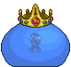 | 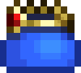 | Es el jefe más débil del juego y este puede aparecer ya sea invocándolo con la corona de slime o durante la lluvia de slimes luego de matar a 75 de slimes (150 la primera vez) o también puede ser con una baja probabilidad durante el día. |
Ojo Cthulhu |
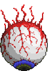 | 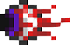 | El Ojo de Cthulhu puede aparecer naturalmente si el jugador tiene mas de 200 de vida, mas de 2 NPCs y 10 de defensa. Su segunda forma se activa al llegar a la mitad de su vida. Su patrón se basa en embestirte e invocar sirvientes de Cthulhu, una versión más débil de los ojos demoníacos. En su segunda forma embestirá con más frecuencia |
Devoradoamundo |
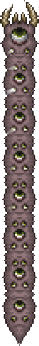 | 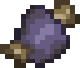 | Es el jefe que pertenece a la corrupción y reemplaza al Cerebro de Cthulhu. Se puede invocar de dos formas: destruyendo tres orbes sombríos de la corrupción o usando un cebo de gusanos. Su patrón de ataques esta conformado por varios segmentos de devoradores, consiste en se meterse bajo tierra y salir para atacar al jugador, como un devorador |
Cerebro Cthulhu |
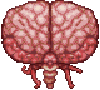 | 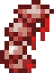 | Es el jefe que pertenece al carmesí y reemplaza al Devoramundos. Se puede invocar de dos formas: destruyendo tres corazones carmesí del carmesí o usando una espina dorsal sangrienta. Su patrón de ataques en su primera forma recibe daño e invocará un total de 20 - 30 criaturas los cuales giran a su alrededor, y una vez que se derrotan a todas las criaturas, podrá recibir daño |
Cierviclope |
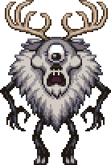 | 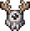 | Es un boss agrgado por una colaboracion con Dont Starve |
Esqueletron |
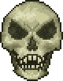 | 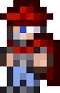 | Es necesario vencerlo para entrar a la mazmorra. Al intentar entrar sin derrotarlo, aparecerá el Guardián de la mazmorra y te matará de un golpe. Se invoca al hablar con el anciano en la noche y liberar su maldición (la primera vez), y luego matando al buhonero con el muñeco de vudú del buhonero. Conformado por una cabeza y dos manos. Tiene dos patrones: atacar con las manos y dejar la cabeza flotando y girar la cabeza. |
Reina Abeja |
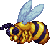 | 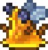 | Se puede invocar en las colmenas rompiendo una larva o con el abejaminación. Tiene tres ataques: se alinea con el jugador y lo embiste de ambos lados (va y vuelve), invoca abejas que atacan al jugador y disparar varios proyectiles venenosos. |
Muro Carmesi |
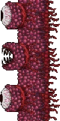 |  |
Es invocado al arrojar el muñeco vudú del guía a la lava en el inframundo mientras el guía esté vivo. Es considerado por muchos el jefe mas difícil del modo normal y no se puede escapar de él hasta que uno de los dos muera, lanzando rayos por los ojos e invocando famélicos. |
Reina Slime |
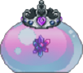 | 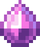 | La Reina slime es un jefe de la bendición. Está disponible para la batalla al comienzo del modo difícil, y se invoca usando un Gelatin Crystal encontrado en la bendición subterránea. Es una pelea opcional y un pequeño desafío antes de enfrentar a los jefes mecánicos, garantizando mejores de equipos y otros objetos. Hay un parecido muy fuerte con el jefe del modo normal, el Rey slime, y es uno de los dos jefes sagrados que aparecen en el juego. Si bien su primera forma es sencilla con patrones de ataque similares a los del Rey slime, la segunda fase plantea una amenaza mucho mayor y el jefe comienza a volar en el aire, disparando slimes de cristal y proyectiles desde arriba. |
Destrcutor Mecanico |
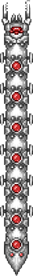 | 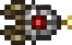 | Es la versión mecánica del Devoramundos, puede aparecer naturalmente después de activar el modo difícil o usando un gusano mecánico. Es considerado el jefe más fácil de los mecánicos. Al hacerle cierta cantidad de daño en cada una de sus secciones aparecerán sondas que atacarán al jugador con sus rayos láser. |
Gemelos |
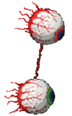 | 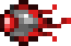 | Son la versión mecánica del Ojo de Cthulhu conformado por dos ojos que están conectados uno del otro. Cada ojo es diferente, Espasmatizador realiza ataques cuerpo a cuerpo, mientras que Retinator usa ataques a distancia. Sus patrones son similares al del Ojo de Cthulhu, pero al recibir cierta cantidad de daño, pasaran a su segunda forma. Retinator atacará lanzando láseres mientras que espasmatizador embestirá al jugador y lanzara llamas malditas. |
Esqueletron Mecanico |
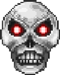 | 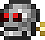 | Es la versión en el mecánica de Esqueletrón, este tiene cuatros brazos son: una sierra, unas pinzas, un láser y un cañón, no es necesario destruir sus brazos para matarlo. Puede ser invocado de noche usando el cráneo mecánico o aparecer naturalmente si no ha sido invocado. Puede sacar pinchos de su cabeza y empezar a girar hacia el jugador, esto aumentara su defensa. |
Plantera |
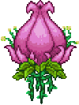 | 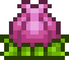 | Es un jefe que se invoca al romper un bulbo de Plantera en la selva subterránea, después de matar a los tres jefes mecánicos. Tiene dos formas, en su primera forma se moverá agarrándose de bloques sólidos, con sus ganchos, lanzando proyectiles picudos o bolas picosas, en su segunda forma, se moverá más rápido y embestirá al jugador. También saldrán pequeños devorahombres de su cuerpo. |
Emperatriz de Luz |
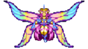 | 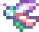 | La Emperatriz de la luz es un jefe de la bendición con 70,000 de vida. Se puede invocar al matar al Crisopa prismática en el mismo bioma. Es una pelea opcional, y está destinada a ser enfrentada entre Plantera y Gólem. Deja un equipamiento fuerte, debido a la gran dificultad que presenta enfrentarla antes del Gólem. |
Golem |
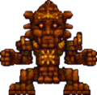 | 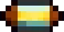 | Es encontrado en el Templo de la selva, para invocarlo se usa la célula de poder de lihzahrd en un altar de lihzahrd. Tiene dos fases. En su primera fase, sus brazos y cabeza pueden ser atacados. Destruir sus brazos no es necesario, pero será de ayuda. Cuando la cabeza se quede sin vida, empezará a flotar por encima del cuerpo, lanzando bolas de fuego y láser por los ojos, permitiendo poder atacar al cuerpo. El cuerpo saltará hacia el jugador, una vez destruido el cuerpo será derrotado. |
Duque Fishron |
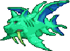 | 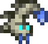 | Es un pescado-cerdo-dragón que puede ser invocado pescando con un gusano trufa, en algún océano. En su primera forma, embestirá cinco veces al jugador y después lanzara burbujas explosivas o sharknados. En su segunda forma, sus ojos empiezan a brillar, y su cuerpo se vuelve oscuro, su defensa y ataque aumentaran. Sus ataques serán los mismos, solo que, lanzara burbujas hacia todos lados, mientras gira en círculos, y en vez de invocar sharknados invocará largos Cthulhunados, los cuales se mantendrán un momento después de derrotarlo. |
Mago |
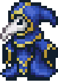 | 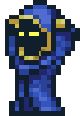 | Es un jefe invocado tras matar a los sectarios que aparecen en la entrada de la mazmorra después de derrotar al gólem. Al aparecer no puede recibir daño. Tiene 3 tipos de ataque: el primero lanzará bolas de fuego teledirigidas hacia el jugador y explotan al impactar, lanzará una bola de cristal que dispara fragmentos de hielo en 6 direcciones y un orbe que dispara rayos similar a los de la esfera magnética. A medida que va perdiendo vida comienza como su segunda forma, lanzará luces antiguas, proyectiles púrpuras bastante rápidos y letales, hará un ritual con cuatro copias mas, dañar al original cancelará el ritual, del ritual invocará dragones fantasma y visiones antiguas. |
Moon Lord |
 |
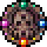 | Es el jefe final y más poderoso del juego. Se invoca al derrotar las 4 torres celestiales o usando un sello celestial. Tiene 2 manos con ojos donde allí disparan rayos fantasmales, invoca esferas y ojos fantasmales, puede atacar a cuerpo a cuerpo. El ojo de su cabeza también disparará rayos fantasmales y un rayo de la muerte que rodea casi toda la pantalla. Usará su lengua para impedir las curaciones. El corazón que aparece después derrotar su cerebro. Al acabar su corazón, es derrotado. |